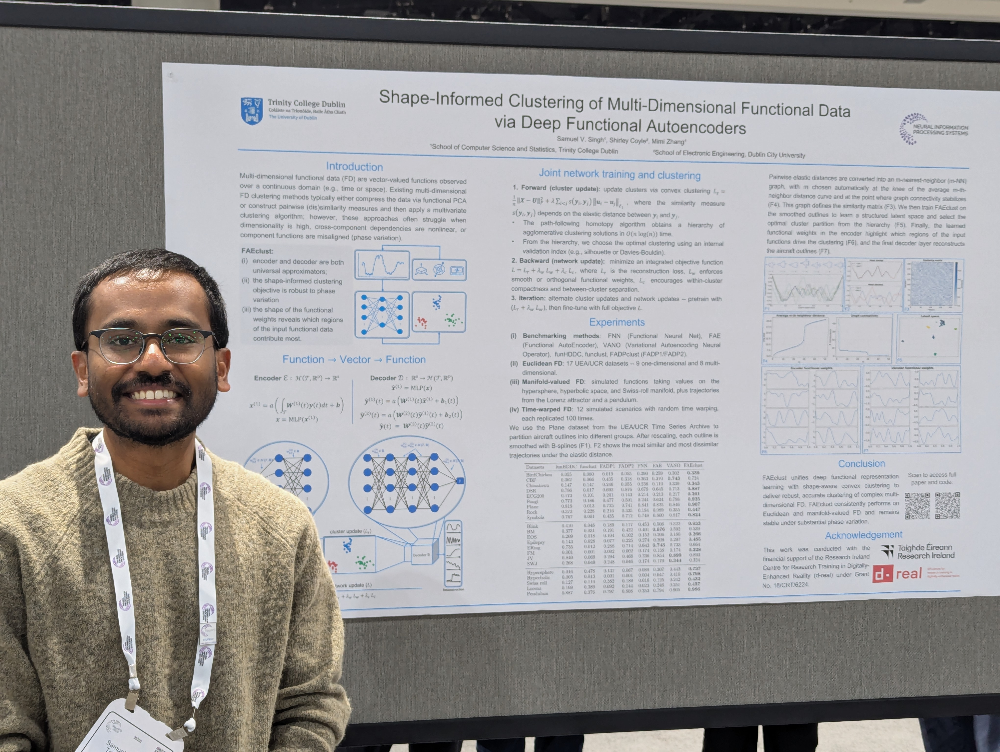
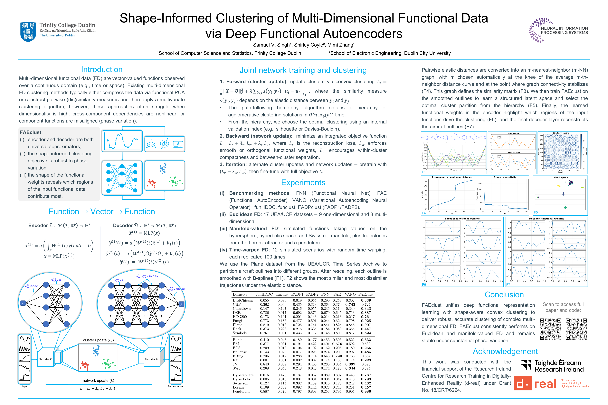

I'm Samuel — building shape-aware machine learning for time series.
PhD researcher at Trinity College Dublin working at the intersection of theoretical machine learning, functional data analysis and time-series clustering. Trained in physics — first in cosmology and astrophysics, then in theoretical solid-state physics and quantum mechanics — I now develop methods for clustering and representation learning that work on any long, multivariate, noisy time series, with a current focus on neuroimaging.

Trained in physics, working in machine learning — and still curious about most things in between.
I came to physics through cosmology and astrophysics — the things you fall for as a kid staring at the sky and never quite shake. Through school in Lucknow and a B.Sc. (Hons.) at St. Stephen's College in Delhi, that's where my curiosity lived.
For my M.Sc. at RWTH Aachen, I shifted into theoretical solid-state physics and quantum mechanics — and into the kind of computational work that handles real, noisy data. A research stay at Empa in Switzerland turned into a thesis on unsupervised clustering of measurements from quantum devices, and that's where machine learning quietly took over: not just as a tool, but as a subject in its own right — the math underneath, not only the applications on top.
Today, I'm a third-year PhD candidate at Trinity College Dublin, supervised by Dr. Mimi Zhang and funded by d-real (Research Ireland). My research sits at the meeting point of functional data analysis, deep representation learning, and time-series clustering: I develop methods that treat sequences as continuous functions of time, rather than bags of summary statistics, and recover structure from them. The methods are domain-agnostic — anywhere there are long, multivariate, noisy time series. I'm currently focused on neuroimaging; more on the group's work on Mimi Zhang's website.
Three threads, one loom.
My work braids together representation learning for sequences, statistical models for curves, and the practical realities of body-worn sensors. Each card below is something I'm actively writing, building, or thinking about.
Functional Data Clustering
How do you group time series that look alike — even when they're sampled at different times, different rates, and live in many dimensions? I design clustering methods that respect the smoothness, shape and multivariate structure of functional observations.
Deep Functional Autoencoders
Learning low-dimensional representations of curves that are shape-aware: small nudges in the latent space correspond to interpretable changes in the underlying signal. The substrate of my NeurIPS 2025 work.
Currently: Neuroimaging
Extending the framework to fMRI dynamic functional connectivity — clustering patterns of brain-region interaction over time. Joint work with the group at TCD; more on Mimi Zhang's website.
Manifold Learning for Curves
Functional data often live on curved spaces (think shape manifolds, sphere-valued signals). I'm interested in methods that respect this geometry instead of flattening it.
Long-horizon Time Series
How do we summarise long, multivariate sequences without collapsing the very dynamics we care about? Hierarchical models and multiscale representations.
Open, Reproducible ML
I care about code that runs, methods that ship, and benchmarks that aren't curated to flatter the proposer. Most of my work lives on GitHub with the rough edges visible.
Out in the world.

Shape-Informed Clustering of Multi-Dimensional Functional Data via Deep Functional Autoencoders
We introduce FAEclust, a functional autoencoder framework for cluster analysis of multi-dimensional functional data. The encoder captures non-linear relationships between curves while the decoder reconstructs both Euclidean and manifold-valued signals; together with a shape-informed clustering objective, the method handles phase variation and recovers meaningful structure in long-horizon physiological data — outperforming vector-based baselines while remaining interpretable.
Let's talk time series, neuroimaging, or the weather in Dublin.
I'm always happy to chat with prospective collaborators, students looking for a PhD perspective, and anyone working on functional data, clustering, or representation learning for sequences.
On stage (and by the poster).
A selection of recent and upcoming presentations.
-
2025NeurIPS 2025 — Poster. Shape-Informed Clustering of Multi-Dimensional Functional Data via Deep Functional Autoencoders (FAEclust). Friday 5 Dec, 11:00 AM – 2:00 PM PST · San Diego, USA. Main conference
Passing it on.
Teaching Assistant & Demonstrator — Trinity College Dublin
Tutorials, labs and demonstrating across postgraduate and undergraduate modules:
- CS7CS4 — Machine Learning
- CS7DS2 — Optimisation for Machine Learning
- CS7NS1 — Scalable Computing
- CSU33061 — Artificial Intelligence I
- STU34507 — Statistical Inference I
- STU22004 — Applied Probability I
Mentoring & supervision
Supervised an undergraduate thesis on Benchmarking Dynamic Functional Connectivity Estimation Methods for fMRI Data.
Behind the scenes.
-
·Reviewer — NeurIPS.
-
·PhD representative — d-real (Research Ireland Centre for Research Training in Digitally-Enhanced Reality).
Outside the lab.
A PhD is a long game, and the things below are what keep mine sustainable. They're also a fair description of what I'd rather be doing on any given Sunday.
On two wheels, most days
I cycle almost every day — including the commute — unless Dublin is doing something genuinely punishing with the rain. The bike is half transport, half thinking time.
Football, weekly
A standing weekly game with friends. I'm not the most skilled player on the pitch, but I am reliably one of the most enthusiastic.
Cooking for people I love
No matter how loaded the deadline week, I make time to cook for family and friends. It's the most reliable way I know to slow down a thesis-shaped brain.
Weekly food-shelter shift
I help out at a local food shelter once a week. It's a small, regular commitment that keeps the rest of my work in proportion.
Indoor garden, in progress
A growing collection of indoor plants, and an ongoing experiment in not overloving them. Turns out plants, like papers, do better with restraint.
Astrophysics & cosmology
Still very much in love with this. I keep up with new results, read review papers and popular books for fun, and would happily get into a long conversation about black holes or the early universe with anyone willing.
Where I've been.
A condensed timeline. Email me for the full PDF.
- School of Computer Science & Statistics; funded by Research Ireland through the d-real programme.
- Thesis: Cluster Analysis of Multi-Variate Functional Data through Non-linear Representation Learning.
- Specialised in theoretical solid-state physics and quantum mechanics, with computational and machine-learning methods for physics research.
- Thesis: An unsupervised model to cluster univariate datasets acquired on nanoscale devices.
- Coursework in classical and quantum mechanics, electrodynamics and statistical physics; early exposure to cosmology and astrophysics, which remain a personal interest.
- Focus on implementing physical models via computational methods.
- Cluster analysis of datasets acquired on quantum devices.
- Awarded the PROMOS (DAAD) stipend for the research stay; thesis graded 1.3.
- Computational physics — Kinetic Monte-Carlo simulation of electrochemical metallisation (ECM) cells.
- More on LinkedIn.